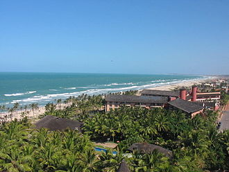

Informações técnicas sobre relevo, população, IDH etc.
| INFORMAÇÕES | |
|---|---|
| Municípios limítrofes | Fortaleza, Eusébio, Cascavel Pindoretama, Horizonte e Itaitinga |
| Fundação | 13 de fevereiro de 1699 (322 anos) |
| Área total | 480,997 km² |
| Clima | tropical atlântico semi-úmido (As) |
| IDH | 0,641 — médio |
| PIB | R$ 23 504,87 |
| INFORMAÇÕES TERRITORIAIS | |
|---|---|
| Número de habitantes | 80 271 habitantes |
| Superfície de Aquiraz |
31 493 hectares
480.997 km² (121,60 sq mi) |
| Densidade populacional | 166,9 hab./km² |
| Altitude de Aquiraz | 14 metros de altitude |
| Coordenadas geográficas decimais |
Latitude:
-3.90254
Longitude: -38.3885 |
| Coordenadas geográficas sexagesimais | Latitude: 3° 54' 9'' Sul , Longitude: 38° 23' 19'' Oeste |
| INFORMAÇÕES DO MUNICÍPIO | |
|---|---|
| Endereço da Prefeitura Municipal de Aquiraz |
Aquiraz
Prefeitura de Aquiraz
Rua João Lima, 259 AQUIRAZ - CE, 61700-000 Brasil Work +55 (85) 3361-1865 Fax +55 (85) 3361-1865 |
| Telefone da prefeitura |
(85) 3361-1865
Internacional: +55 85 3105-1369 |
| Fax |
(85) 3361-1865
Internacional: +55 85 3255-8317 |
| Endereço electrónicoda prefeitura |
A carregar...
|
| Site oficial do município | aquiraz.ce.gov.br |
| INFORMAÇÕES DO ADMINISTRATIVAS | ||
|---|---|---|
| Prefeito de Aquiraz | BRUNO BARROS GONÇALVES | |
| Partido politico | PL | |
| INFORMAÇÕES DE TRANSPORTE | |
|---|---|
| Transporte urbano disponível | Metropolitano, Sistema de partilha de bicicletas (Bicicletar) |
| Aeroporto |
Aeroporto Internacional Pinto Martins
21.3 km
Aeroporto Dix-Sept Rosado
184 km
Aeroporto de Sobral
217.9 km
|
| INFORMAÇÕES DE DISTÂNCIA A OUTRAS CIDADES | ||
|---|---|---|
| São Paulo : 2360 km | Rio de Janeiro : 2178 km | Brasília : 1685 km |
| Salvador : 1010 km | Belo Horizonte : 1872 km | Manaus : 2406 km |
| Curitiba : 2664 km | Recife : 604 km mais perto | São Luís : 675 km |
| Belém : 1136 km | Porto Alegre : 3219 km | Guarulhos : 2351 km |
| Campinas : 2325 km | São Luís : 654 km | São Gonçalo : 2182 km |
| Distância calculada em linha reta! | ||
Conheça mais sobre a história de Aquiraz.
A história de Aquiraz mistura os primeiros habitante destas terras, os índios potyguara e outras tribos pertencentes ao tronco tupi como os jenipapo-kanyndé, com os portugueses religiosos e militares que vieram habitar esta região visando à catequização dos índios e à proteção do território contra invasões de outros povos europeus. A localidade de Aquiraz conheceu a presença dos portugueses depois que estes resolveram explorar as terras ao norte da ponta do Iguape, na qual foi construído o Reduto Novo.
Aquiraz é conhecida como "a primeira capital do Ceará". Em seu perímetro central, situado em torno da bucólica praça Cônego Araripe, a qual tem traçado de missão jesuítica, encontram-se as principais edificações de interesse histórico arquitetônico do local. Entre elas, podemos citar a imponente Igreja Matriz de São José de Ribamar, construída no século XVIII. O templo apresenta ecletismo no estilo, predominando os traços barrocos e neoclássicos, frutos das várias modificações que passou ao longo dos anos. Destaca-se no nicho central do altar-mor a imagem do padroeiro São José de Ribamar, calçado de botas, relembrando o bandeirante audaz.
Outro monumento importante é a antiga Casa de Câmara e Cadeia iniciada no século XVIII e concluída no ano de 1877. Atualmente, o prédio sedia o Museu Sacro São José de Ribamar, fundado em 1967, sendo considerado o primeiro museu sacro do Ceará e o segundo do Norte-Nordeste. Seu acervo compõe-se de mais de 600 peças de caráter religioso datadas dos séculos XVII , XVIII e XIX, alusivas à fé do povo cearense. O antigo sobradão tem sua arquitetura original bastante conservada, pode-se observar as grades das antigas selas no pavimento inferior, e o assoalho reforçado com vigas de carnaúba na parte superior onde antes funcionava a câmara, o fórum e a prefeitura municipal. A peça mais importante do acervo é uma cruz processional de prata cinzelada datada do século XVIII, herança dos jesuítas que estiveram em Aquiraz.
O Mercado da Carne, hoje Mercado das Artes, século XIX, outrora centro comercial da cidade, impressiona o visitante pela particular técnica de construção, a qual prima pelo uso da carnaúba e do tijolo adobe. Sua parte central era o local de comercialização da carne, a harmonia geométrica da armação do telhado deixa transparecer o caráter arrojado do estilo. Os antigos pontos comerciais, situados na parte externa, foram durante décadas, o coração do comércio da cidade, fato que perdurou até o tombamento do prédio em 1988.
A Casa do Capitão-mor é um raro exemplar do casario setecentista do estado. Conhecida também como casa da Ouvidoria, nome do primeiro núcleo judiciário do Ceará, o singelo edifício é feito com paredes de pau-a-pique, reforçada com amarras de couro de boi, uma referência material ao ciclo econômico das charqueadas, o qual predominou na região durante o século XVIII. A riqueza de detalhes confere ao "antigo palácio" uma atmosfera nostálgica; relembrando um passado distante, marcado por histórias de botijas, fugas de escravos e pela bravura e sagacidade do respeitado e temido "Capitão-Mor".
Os jesuítas que permaneceram por 32 anos (1727-1759), fundaram no local, hoje chamado "sitio colégio", o famoso "Hospício dos Jesuítas". Hospício, no linguajar da época, significava "posto de hospedagem", era lá aonde os padres missionários vinham recuperar suas forças para depois prosseguirem com sua missão de catequizar os aborígenes nos mais longínquos confins da capitania.
A residência apostólica também abrigou o primeiro centro de ensino do estado e seu primeiro seminário, constituindo-se num dos únicos polos difusores da cultura daquele tempo. O que restou do extinto estabelecimento são apenas as ruínas da antiga capela de Nossa Senhora do Bom sucesso, construída em 1753. Há ainda quem acredite numa famosa "maldição". Segundo a lenda, quando os jesuítas foram expulsos, eles profetizaram que um dia o mar haveria de passar sete metros acima das torres da igreja matriz, espalhando o caos por toda a vila. Todos os bens da ordem foram confiscados, porém reza a tradição que parte dessas riquezas permanece escondida em algum recanto daquela velha habitação.
Os escombros das antigas Pontes Imperiais ainda podem ser contemplados nas margens do rio Pacoti. Conta-se que elas foram erguidas com material retirado das fundações do antigo "hospício", quando este foi demolido em 1854.
A riqueza da aristocracia portuguesa de outrora ainda permanece a vista nas ruas do centro de Aquiraz, onde suntuosos casarões remetem aos modelos arquitetônicos de Portugal e do sertão. Algumas influências Mouras prevalecem intactas nas fachadas dos prédios, refletindo assim a opulência daqueles idos, conferindo um estilo "sui generis" ao casario da cidade.
Saiba mais sobre os melhores lugares e o que fazer em Aquiraz.
Primeira capital do Ceará, Aquiraz é responsável por parte importante do fluxo de turistas que vai a Fortaleza. O motivo fica na praia de Porto das Dunas: é o Beach Park, maior parque aquático do Brasil, que recebe o prêmio de Aatração do Ano do Guia Brasil 2014 e do qual fazem parte dois resorts – a região tem outros hotéis caros e diversos condomínios luxuosos em construção. Vale também conhecer a Prainha, que concentra barracas de praia, tem uma pequena e agradável vila onde trabalham as rendeiras locais e fazer uma visita ao Centro Histórico, a 6 quilômetros dali, para conhecer melhor a história da cidade.

Sugestões de roteiros:
2 dias – Aproveite todas as atrações do Beach Park. Para as crianças, há um playground aquático com mais de 50 brinquedos. Entre os toboáguas, o Insano é o campeão da adrenalina: uma descida de 41 metros que atinge 105 km/h.
4 dias – Após visitar a principal atração, o Beach Park, reseve um dia para conhecer o Centro Histórico, comprar rendas e visitar a Praia do Presídio. Em outro dia, vá ao Parque Engenhoca. Não deixe de ir à vizinha Fortaleza para comer no Centro das Tapioqueiras.
Veja como chegar nos melhores pontos de Aquiraz
Quem vem de Fortaleza segue pela Avenida Washington Soares, cai na Eusébio de Queiróz e acessa a CE-040, que dá acesso ao Centro. Se você for seguir para o Beach Park, o caminho é outro: saía pela Washington Soares, entre na Ministro Lisboa, acesse a Manoel Mavignier e chegue na Avenida Litorânea (CE-025), que termina na frente do Beach Park.